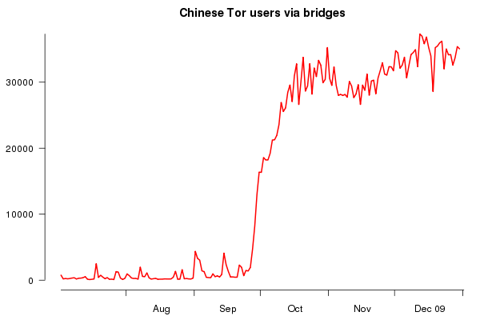
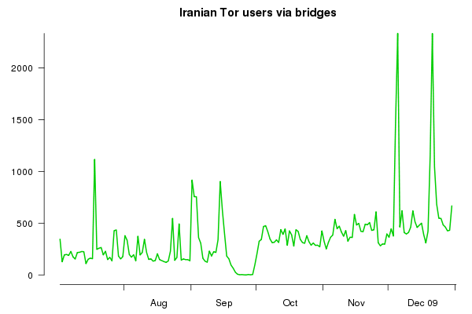
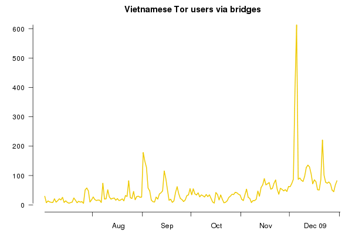
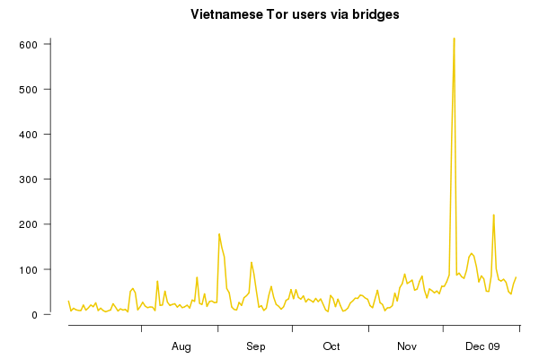
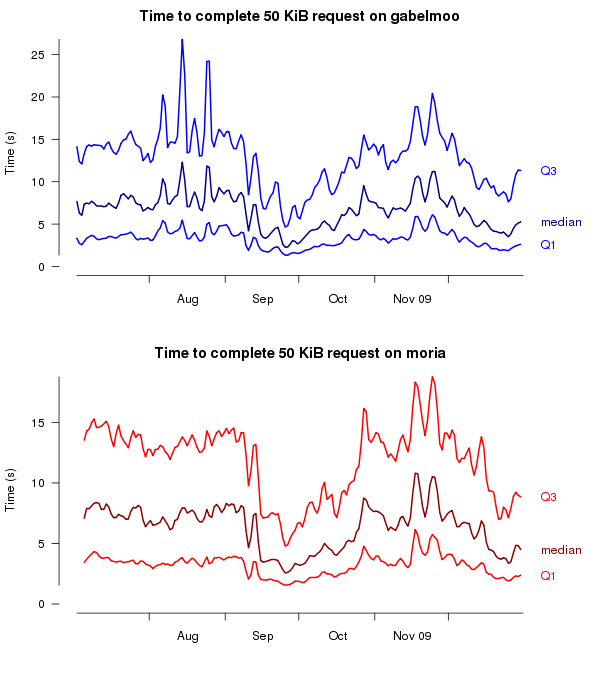
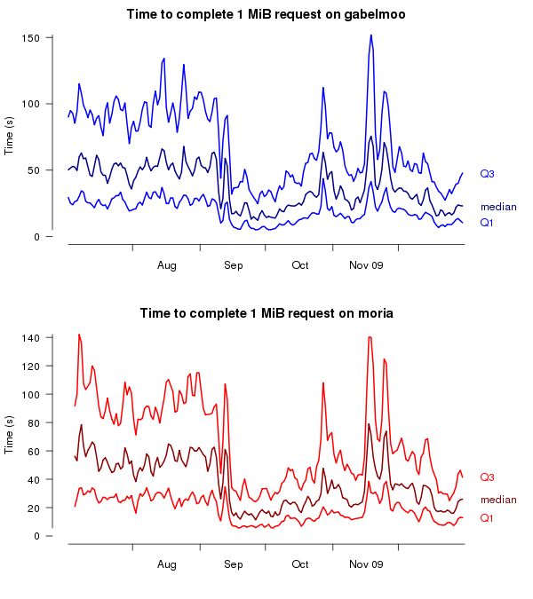
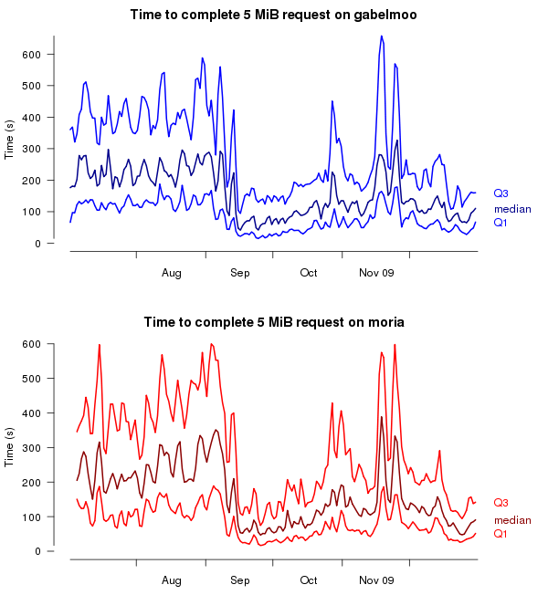
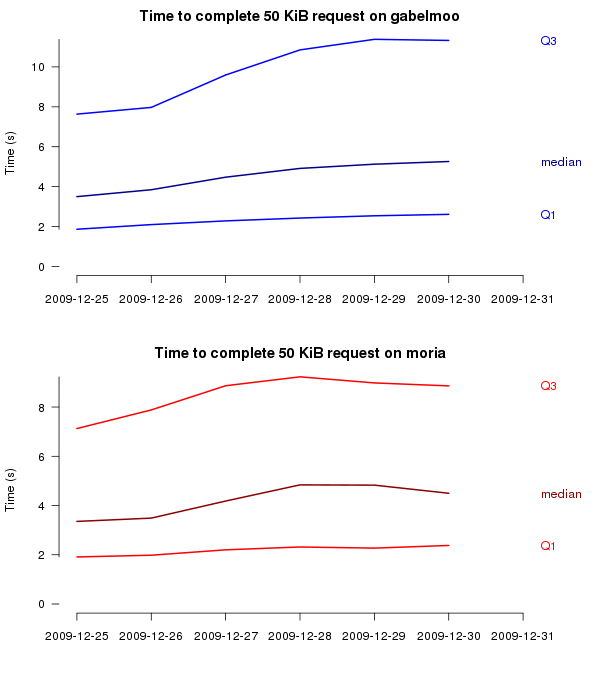
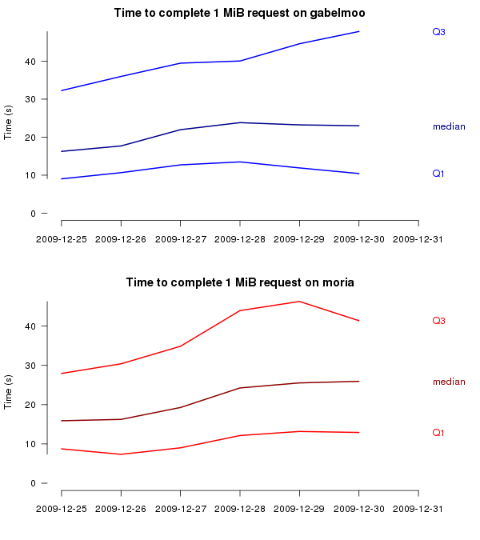
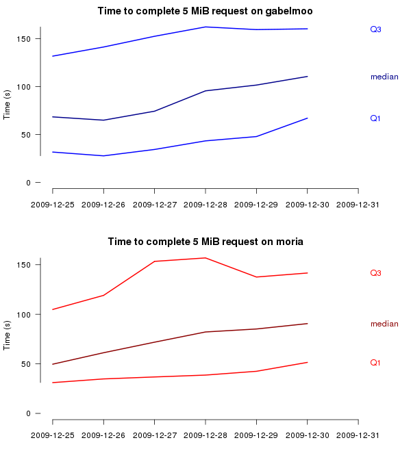

Tor Metrics Portal: Graphs
The graphs on this page visualize a small portion of the data gathered in the Tor Metrics Project. They are generated by a combination of shell scripts, Java applications, and R code (for details see the Docs section). The following graphs are available:
- Relays in the Tor network
- New or returning, directly connecting Tor users
- Recurring, directly connecting Tor users
- Tor users via bridges
- Time to complete requests
Relays in the Tor network
The number of relays in the Tor network can be extracted from the hourly published network status consensuses.

Other graphs related to network size can be found on a separate page.
New or returning, directly connecting Tor users
Users connecting to the Tor network for the first time request a list of running relays from one of currently seven directory authorities. Likewise, returning users whose network information is out of date connect to one of the directory authorities to download a fresh list of relays. The following graphs display an estimate of new or returning Tor users based on the requests as seen by moria1, one of the directory authorities.

Graphs for other countries can be found on a separate page.
Recurring, directly connecting Tor users
After being connected to the Tor network, users need to refresh their list of running relays on a regular basis. They send their requests to one out of a few hundred directory mirrors to save bandwidth of the directory authorities. The following graphs show an estimate of recurring Tor users based on the requests as seen by trusted, a particularly fast directory mirror.

Graphs for other countries can be found on a separate page.
Tor users via bridges
Users who cannot connect directly to the Tor network instead connect via bridges, which are non-public relays. The following graphs display an estimate of Tor users via bridges based on the unique IP addresses as seen by a few hundred bridges.
Please notice that the graphs below have not been updated since January 2, 2010.
  

Time to complete requests
The following graphs show the performance of the Tor network as experienced by its users. The graphs contain the average (median) time to request files of three different sizes over the network as well as first and third quartile of request times.
Please notice that the graphs below have not been updated since January 2, 2010.
     